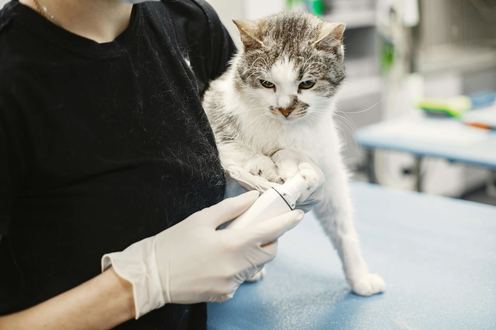

We are one of Manchester's top rated Cattery's in the heart of Didsbury and we provide the very best care for our cats.
We have two onsite vets and eight excellent staff on our team. Our cattery can house up to 50 cats at any one time.
Services

We charge 12 pounds per day for one cat.
We also have a 48 hour cancellation policy too so if you decide no longer need our services you can contact us within this time.
We also have a service where if you need your cat picking up from your home and dropping off again we can do that for 10 pounds each way if you live within 5 miles of the cattery.
If your cat has any allergies please let us know!
If your cat has any specific food requirements or regular medication needed then also please let us know!